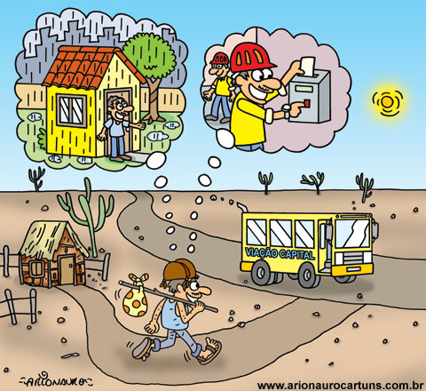

Do campo a cidade colhendo oportunidades
Êxodo rural é o processo de saída de pessoas do campo para a cidade. A modernização agrícola, concentração fundiária e busca por melhores condições são algumas de suas causas.

"Êxodo rural é o processo de migração de pessoas do campo para a cidade. Muitas causas podem ser associadas a ele, como a modernização da produção agrícola, a concentração fundiária, a busca por melhores condições de vida e melhores empregos, entre outros fatores.
Entre as suas consequências estão o esvaziamento das zonas rurais e o crescimento desordenado das cidades. No Brasil, o êxodo rural ganhou força com a industrialização e se intensificou entre 1970 e 1980, quando mais da metade da população passou a viver nas cidades."

"Quais são as causas do êxodo rural?
"A partida de um grande número de pessoas das áreas rurais em direção aos centros urbanos pode ocorrer de forma espontânea ou forçada, da mesma forma como acontecem com as migrações no geral."
"Os motivos que levam a esse deslocamento são diversos, estando associados à reestruturação produtiva de um determinado território – portanto, um fator estrutural –, à conjuntura econômica ou questões financeiras particulares e até mesmo a condicionantes naturais (desastres naturais, secas severas e outros)."